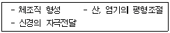

제빵기능사 (2005-10-02 기출문제)
1과목: 제조이론
1. 거품형 케이크 제조에서 수분량(계란+우유)에 따른 체적의 변화 중 케이크의 부피가 최대인 수분량은?
- 135%
- 155%
- 175%
- 195%
(정답률: 48%)

2. 흰자와 같이 믹싱에 의하여 공기를 끌어들이는 재료의 온도는 매우 중요하다. 낮은 온도의 반죽에 대한 설명으로 틀린 항목은?
- 거품을 형성하는 시간이 길어진다.
- 굽기 중 같은 증기압을 형성하는 시간이 짧아진다.
- 제품의 기공과 조직이 조밀하게 된다.
- 제품의 부피가 작게 된다.
(정답률: 53%)
3. 맛있는 양질의 도넛을 만들기 위한 튀김기름 중의 유리 지방산 함량으로 가장 적당한 것은?
- 0.5%
- 1.5%
- 2.5%
- 3.5%
(정답률: 38%)
4. 초콜릿을 녹여 사용하는 방법 중 틀린 것은?
- 작은 조각으로 만들어 녹인다.
- 뜨거운 시럽이나 기름을 붓는다.
- 뜨거운 물을 붓는다.
- 이중용기나 중턍을 사용한다.
(정답률: 70%)
5. 케이크 굽기시의 캐러멜 반응은 다음 어느 성분의 변화로 일어나는가?
- 당류
- 단백질
- 지방
- 비타민
(정답률: 85%)
6. 오믈렛(Omellette)에 충전할 수 없는 것은?
- 딸기
- 생크림
- 바나나
- 전분
(정답률: 79%)
7. 다음 반죽형 제법 중 먼저 밀가루와 유지를 혼합하여 부드러움 또는 유연감을 목적으로 하는 제법으로 알맞은 것은?
- 크림법
- 1단계법
- 설탕/물법
- 블렌딩법
(정답률: 77%)
8. 젤리 롤 케이크를 말 때 터지는 경우가 발생할 때 조치할 사항이 아닌 것은?
- 계란에 노른자를 추가시켜 사용한다.
- 설탕(자당)의 일부를 물엿으로 대치한다.
- 덱스트린의 점착성을 이용한다.
- 팽창이 과도한 경우에는 팽창제 사용량을 감소시킨다.
(정답률: 70%)
9. 굳어진 설탕 아이싱 크림을 여리게 하는 방법으로 부적당한 것은?
- 설탕 시럽을 더 넣는다.
- 중탕으로 가열한다.
- 전분이나 밀가루를 넣는다.
- 소량의 물을 넣고 중탕으로 가온한다.
(정답률: 75%)
10. 거품형 케이크의 특징에 대한 설명으로 틀린 것은?
- 계란단백질 변성에 의한 공기 포집성을 이용한다.
- 밀가루 사용량보다 계란 사용량이 많다.
- 계란 노른자가 제품의 부피를 형성한다.
- 유지는 사용하지 않거나 적게 사용한다.
(정답률: 60%)
11. 버터 스펀지 케이크의 반죽 비중으로 맞는 것은?
- 0.40
- 0.55
- 0.75
- 0.85
(정답률: 59%)
12. 파운드 케이크의 기본 배합으로 맞는 것은?
- 밀가루 : 설탕 : 달걀 : 유지 = 100 : 100 : 100 : 100
- 밀가루 : 설탕 : 달걀 : 유지 = 100 : 100 : 75 : 100
- 밀가루 : 설탕 : 달걀 : 유지 = 100 : 60 : 100 : 100
- 밀가루 : 설탕 : 달걀 : 유지 = 100 : 100 : 100 : 30
(정답률: 64%)
13. 레이어 케이크 제조시 롤의 기능이 아닌 것은?
- 제품의 노화지연
- 제품의 수율증가
- 제품의 구조력 증가
- 제품의 유연성 증가
(정답률: 34%)
14. 방역 설계와 시공시 조치사항으로 잘못된 것은?
- 크기장치는 태형의 1개와 소형의 여러 개가 효과적이다.
- 주방대의 천정은 낮을수록 좋다.
- 바닥의 배수구는 측면에 설치한다.
- 냉장고와 발열기구는 가능한 멀리 배치한다.
(정답률: 74%)
15. 파운드 케이크를 만들 때 밀가루와 설탕을 고정하고 유화쇼트닝을 증가시킬 경우에 대한 설명으로 틀린 항목은?
- 계란 사용량도 증가시킨다.
- 우유(시유) 사용량도 증가시킨다.
- 베이킹파우더는 감소시킨다.
- 소금 사용량도 다소 증가시킨다.
(정답률: 39%)
16. 갓 구워낸 빵을 식혀 상온으로 낮추는 냉각의 설명이 아닌 것은?
- 빵속의 온도를 35~40℃로 낮추는 것이다.
- 곰팡이 및 기타 균의 피해를 막는다.
- 절단, 포장을 용이하게 한다.
- 수분함량을 25%로 낮추는 것이다.
(정답률: 68%)
17. 빵제품의 껍질색이 여리고 부스러지기 쉬운 껍질이 되는 경우에 가장 크게 영향을 미치는 요인은?
- 발효가 지나치면
- 발효가 부족하면
- 반죽이 지나치면
- 반죽이 부족하면
(정답률: 57%)
18. 일반 제빵 제품의 성형과정 중 작업실의 온도 및 습도가 가장 바람직한 것은?
- 온도 25~28℃, 습도 70~75%
- 온도 10~18℃, 습도 65~70%
- 온도 25~28℃, 습도 80~85%
- 온도 10~18℃, 습도 80~85%
(정답률: 53%)
19. 발효에 영향을 주는 요소로 볼 수 없는 것은?
- 이스트의 양
- 쇼트닝의 양
- 온도
- pH
(정답률: 67%)
20. 제빵에서 탈지분유를 1% 증가하면 추가되는 물량으로 가장 적당한 것은?
- 1%
- 5.2%
- 10%
- 15.5%
(정답률: 63%)
2과목: 재료과학
21. 식빵 배합을 할 때 반죽의 온도 조절에 가장 크게 영향을 미치는 원료는?
- 밀가루
- 설탕
- 물
- 이스트
(정답률: 66%)
22. 다음 중 올바른 팬닝요령이 아닌 것은?
- 반죽의 이음매가 틀의 바닥으로 놓이게 한다.
- 철판의 온도를 60℃로 맞춘다.
- 반죽은 적정 분할량을 넣는다.
- 비용적의 단위는 cm3/g이다.
(정답률: 82%)
23. 믹싱(Mixing)시 글루텐이 형성되기 시작하는 단계는?
- 픽업단계(Pick up stage)
- 발전단계(Development stage)
- 클린업단계(Clean up stage)
- 렛다운단계(Let down stage)
(정답률: 54%)
24. 다음의 재료 중 많이 사용함으로 반죽의 흡수량이 감소하는 것은?
- 활성 글루텐
- 손상전분
- 유화제
- 설탕
(정답률: 49%)
25. 생산관리의 3대 요소에 해당하지 않는 것은?
- 시장(market)
- 사람(man)
- 재료(material)
- 자금(money)
(정답률: 68%)
26. 제빵시 가수량, 믹싱 내구성, 믹싱시간, 믹싱의 최적시기를 판단하는데 유용한 기계는?
- 레오미터(Rheometer)
- 익스텐소그래프(Extensograph)
- 패리노그래프(Farinograph)
- 아밀로그래프(Amylograph)
(정답률: 68%)
27. 2차 발효에 대한 설명 중 틀린 것은?
- 2차 발효를 생략하면 부피가 작으면서 기공이 너무 커진다.
- 발효실의 습도가 낮으면 빵의 팽창이 저해된다.
- 발효실의 온도가 높으면 반죽의 속결이 고르지 못하게 된다.
- 2차 발효실의 평균온도는 35~38℃이다.
(정답률: 48%)
28. 재료 계량에 대한 설명으로 틀린 것은?
- 저울을 사용하여 정확히 계량한다.
- 이스트와 소금과 설탕은 함께 계량한다.
- 가루재료는 서로 섞어 체질한다.
- 사용할 물은 반죽 온도에 맞도록 조절한다.
(정답률: 79%)
29. 냉동반죽법에서 1차 발효시간이 길어질 경우 일어나는 현상은?
- 냉동 저장성이 짧아진다.
- 제품의 부피가 커진다.
- 이스트의 손상이 작아진다.
- 반죽온도가 낮아진다.
(정답률: 51%)
30. 굽기 중 일어나는 변화로 가장 높은 온도에서 발생하는 것은?
- 이스트의 사멸
- 전분의 호화
- 탄산가스 용해도 감소
- 단백질 변성
(정답률: 48%)
3과목: 영양학
31. 제빵시 경수를 사용할 때 조치사항이 아닌 것은?
- 이스트 사용량 증가
- 맥아 첨가
- 이스트푸드양 감소
- 반죽온도가 낮아진다.
(정답률: 38%)
32. 식품의 수분을 생각할 때 통상의 수분함량(%) 이외에 식품의 보존성 및 미생물 생육과 밀접한 관계를 갖고 있는 것은?
- 수소이온농도
- 수분 활성
- 비열
- 비중
(정답률: 58%)
33. 우유의 응고에 관여하고 있는 금속이온은?
- Mg2+(마그네슘)
- Mn2+(망간)
- Ca2+(칼슘)
- Cu2+(구리)
(정답률: 73%)
34. 전화당을 설명한 것 중 옳지 않은 것은?
- 설탕의 1.3배의 감미를 갖는다.
- 설탕을 가수분해시켜 생긴 포도당과 과당의 혼합물이다.
- 10~15%의 전화당 사용시 제과의 설탕 결정석출이 방지된다.
- 상대적인 감미도는 맥아당보다 낮으나 쿠키의 광택과 촉감을 위해 사용한다.
(정답률: 63%)
35. 다음 설명 중 맞는 것은?
- 식물 전분을 현미경으로 본 구조는 모두 동일하다.
- 전분은 호화된 상태의 소화 흡수나 호화가 안된 상태의 소화 흡수나 차이가 없다.
- 전분은 아밀라아제(amylse)에 의해서 분해되기 시작한다.
- 전분은 물이 없는 상태에서도 호화가 일어난다.
(정답률: 75%)
36. 다음 당류 중에서 이당류(Disaccharides)에 속하는 것은?
- 포도당(glucose)
- 과당(fructose)
- 갈락토오스(galactose)
- 설탕(socrose)
(정답률: 73%)
37. 밀가루의 등급은 무엇을 기준으로 하는가?
- 회분
- 단백질
- 지방
- 탄수화물
(정답률: 59%)
38. 다음 설명 중 옳은 것은?
- 액체유에는 대체로 포화 지방산이 많다.
- 기름의 경화는 보통 니켈을 촉매로 하여 수소 첨가하는 것이다.
- 불포화도가 높을수록 기름의 저장기간이 길어진다.
- 요오드가가 높을수록 불포화도는 낮다.
(정답률: 55%)
39. 튀김기름의 발연 현상과 관계가 깊은 것은?
- 유리지방산가
- 크림가
- 유화가
- 검화가
(정답률: 61%)
40. 활성 건조 이스트를 수화시킬 때 가장 적당한 물의 온도는?
- 10-13℃
- 20-23℃
- 30-33℃
- 40-43℃
(정답률: 36%)
41. 밀가루의 탄성과 관계가 가장 깊은 것은?
- 글리아딘(gliadin)
- 엘라스틴(elastin)
- 글로블린(globulin)
- 글루테닌(glutenin)
(정답률: 75%)
42. 밀가루의 구성성분 중 가장 높은 비율을 차지하는 것은?
- 수분
- 단백질
- 회분
- 전분
(정답률: 43%)
43. 탄수화물 지방과 비교할 때 단백질만이 갖는 특징적인 구성 성분은?
- 탄소
- 수소
- 산소
- 질소
(정답률: 55%)
44. 계란 중에서 껍질을 제외한 고형질은 약 몇 %인가?
- 15%
- 25%
- 35%
- 45%
(정답률: 76%)
45. 유지의 경화란 무엇인가?
- 경유를 정제하는 것
- 지방산가를 계산하는 것
- 우유를 분해하는 것
- 불포화 지방산에 수소를 첨가하여 고체화시키는 것
(정답률: 71%)
46. 다음 영양물질과 분해효소의 연결이 맞게 된 것은?
- 전분-말타아제
- 유당-슈크라아제
- 단백질-트립신
- 지방-펩신
(정답률: 50%)
47. 다음 다당류 중 글루코오스(포도당)만으로 구성되어 있는 탄수화물이 아닌 것은?
- 셀룰로오스
- 전분
- 펙틴
- 글리코겐
(정답률: 44%)
48. 신경조직의 주요물질인 당지질은?
- 세레브로시드(cerabroside)
- 스핑고미엘린(sphingomyelin)
- 레시틴(lecithin)
- 이노시톨(inositol)
(정답률: 31%)
49. 단백질 효율(PER)은 무엇을 측정하는 것인가?
- 단백질의 질
- 단백질의 열량
- 단백질의 양
- 아미노산 구성
(정답률: 56%)
50. 다음과 같은 기능을 하는 영양소는?

- 지방
- 비타민
- 탄수화물
- 무기질
(정답률: 59%)
4과목: 식품위생학
51. 식품에 부족한 성분을 보충, 식품의 영양소를 첨가할 목적으로 사용되는 것은?
- 조미료
- 강화제
- 품질개량제
- 유화제
(정답률: 51%)
52. 정제가 불충분한 기름 중에 남아 식중독을 일으키는 물질인 고시폴(gossypol)은 어느 기름에서 유래하는가?
- 피마자유
- 콩기름
- 면실유
- 미강유
(정답률: 77%)
53. 미생물의 감염을 감소시키기 위한 작업장 위생의 내용과 거리가 먼 것은?
- 소독액으로 벽, 바닥, 천정을 세척한다.
- 빵상자, 수송차량, 매장 진열대는 항상 온도를 높게 관리한다.
- 깨끗하고 뚜껑이 있는 재료통을 사용한다.
- 적절한 환기와 조명시설이 된 저장실에 재료를 보관한다.
(정답률: 82%)
54. 다음 중 곰팡이 독이 아닌 것은?
- 아플라톡신
- 오크라톡신
- 삭시톡신
- 파틀린
(정답률: 62%)
55. 포도상구균에 의한 식중독 예방책으로 가장 부적당한 것은?
- 조리장을 깨끗이 한다.
- 섭취전에 60℃ 정도로 가열한다.
- 멸균된 기구를 사용한다.
- 화농성 질환자의 조리업무를 금지한다.
(정답률: 74%)
56. 빵, 과자 제조시에 첨가하는 팽창제가 아닌 것은?
- 암모늄명반
- 프로피온산 나트륨
- 탄산수소나트륨
- 염화암모늄
(정답률: 45%)
57. 부패세균의 부패 진행과정을 순서대로 설명한 것 중 잘못된 것은?
- 초기에 호기성 세균이 표면에 오염되어 증식한다.
- 호기성 세균이 증식하면서 분비하는 호스에 의해 식품 성분의 변화를 가져온다.
- 혐기성 세균이 식품내부 깊이 침입하여 부패가 완성된다.
- 부피에 관여하는 세균은 대개 한 가지 종류이다.
(정답률: 70%)
58. 위생동물은 식품자체의 피해와 인체에 대한 영향이 매우 크다. 다음 중 위생동물의 특성과 거리가 먼 것은?
- 식성범위가 넓다.
- 쥐, 진드기, 파리, 바퀴 등이 속한다.
- 병원미생물을 식품에 감염시키는 것도 있다.
- 일반적으로 발육기간이 길다.
(정답률: 73%)
59. 화학물질에 의한 식중독의 원인이 아닌 것은?
- 불량 첨가물
- 농약
- 코테르톡신
- 메탄올
(정답률: 41%)
60. 식중독균 중 잠복기가 가장 짧은 균은?
- 포도상구균
- 보툴리누스균
- 장염 비브리오균
- 살모넬라균
(정답률: 59%)
보기에서 수분량이 155%인 이유는, 수분량이 135%일 때와 175%일 때보다 케이크의 부피가 더 크기 때문입니다. 따라서, 155%가 케이크의 부피가 최대가 되는 수분량입니다.